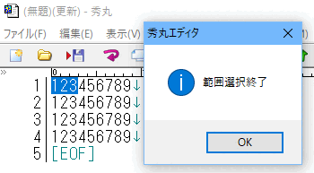

ここでは、秀丸マクロで文字列を編集するときによく使うコマンドの基本的な解説と、実際にコマンドを使う上でいくつか注意すべき点をまとめました。
秀丸マクロで文字列を編集するには大きく分けて、
があります。それらの処理を行うにあたって、範囲選択の方法や文字列変数に取り込む方法、２バイト文字の扱いなどについて主に説明します。
【１】改行を挿入するには（insertreturn; とinsert "\n";）
【２】カーソル位置の文字が何かを知るには（code, unicodeキーワード）
【３】任意の座標にある文字が何かを判断するには（moveto,カーソル移動系コマンド）
【４】範囲選択するには
【５】範囲選択を解除するには
【６】文字列型変数に取り込むには：その１（gettext文)
【７】範囲選択されているか判断するには（selectingキーワード）
【８】文字列型変数に取り込むには：その２（クリップボード経由）
【９】変数内の文字が何かを知るには（ascii関数）
【１０】文字列中の先頭以外の文字が１バイト文字か２バイト文字かを区別するには（midstr文等への注意事項）
秀丸マクロで改行を挿入するには、どうすればよいでしょうか？
その名もずばり、insertreturnという命令があります。
insertreturn文は、「改行キーを押したのと全く同じ働き」をします。
秀丸エディタマクロヘルプの「挿入系文」にも説明されているように、insertreturn文は現在のモードが上書きモードか挿入モードかによって動作が異なります。
上書きモードの場合、「動作環境」-「編集」-「高度な編集1」-「挿入/上書モード」の「上書きモード時のリターン」の設定によって動作が変わります。「カーソル移動する」が選択されていると、改行は挿入されずカーソルが次行行頭に移動します。
また「ファイルタイプ別の設定」-「体裁」-「インデント」の、「自動インデント」で設定した動作になります。
「改行キーを押したのと全く同じ働き」をさせたい場合は、insertreturn文が便利ですが、上書きモード・挿入モードのどちらでも必ず改行を挿入したい場合はどうするのが良いでしょうか？
insert文で改行文字を挿入するのが簡単です。
（例） 改行を挿入するには
insert "\n";または
insert "\x0a";になります。
または、上書きモードの時一旦挿入モードへ変更し、insertreturn してまた上書きモードに戻してあげる方法もあります。
この場合、インデントの設定に従った動作となります。
if(overwrite){
overwriteswitch;
insertreturn;
overwriteswitch;
} else {
insertreturn;
}現在のカーソル位置にある文字が、1バイト文字か2バイト文字かを調べるにはどうすれば良いでしょうか？
code、unicode というキーワードがあります。
codeキーワードは、カーソル位置のShift_JIS 文字コードを表します。
このキーワードは2バイト文字に対応しており、2バイト文字の上位バイトにある場合は2バイトのコードを返します。例えば全角空白の場合、codeキーワードは、0x8140になります。
codeキーワードは、編集中のテキストのエンコードに関係なく、Shift_JISの文字コードを返します。その為、Shift_JISに含まれない文字の場合は、「0」を返します。
unicodeキーワードは、カーソル位置のunicodeコードポイントを表します。
コードポイントなので、UTF-16、UTF-8等の文字符号化後のコードとは異なるので注意してください。
if (code > 0xff) {
message "2バイト文字です";
} else {
message "1バイト文字です";
}秀丸マクロの数値型は４バイトであり、0x8000以降も正の値となるので、上記の書き方でＯＫです。
if (code && 0xff00 != 0) {
message "2バイト文字です";
} else {
message "1バイト文字です";
}ここで他の特殊文字の例も見ましょう。
if (code == 0x0d) {
message "改行文字です";
}以下の書き方では改行文字と判定できません。insert文で改行を挿入する場合との違いに注意しましょう。
if (code == 0x0a) {
if (code == '\n') {
if (code == ascii("\n")) {
if (code == ascii("\r")) { // これもなぜか ascii("\r") == 10 となり駄目※秀丸マクロでは、\rも 0x0a として処理されます。
if (code == eof) {
message "文末です";
}
if (code == 0x09) {
message "タブ文字です";
}以下の書き方でも大丈夫です。
if (code == '\t') {
message "タブ文字です";
}任意の座標にある文字が何かを判断するにはどうすれば良いでしょうか。
簡単な方法としては、カーソル移動系コマンドのmoveto、movetolineno、moveto2でカーソルを移動してから、 codeキーワードを使います。
ここで疑問が出てきます。カーソル移動系コマンドで２バイト文字の真ん中の座標に移動するとどうなるでしょうか？
答え：２バイト文字の先頭にカーソルが移動します。
逆に上記の性質を使うと、movetoで指定した座標値と実際に移動した先の座標値（キーワードx と yで取得出来る）を比較することで、その座標にある文字が、１バイト文字か、２バイト文字の１バイト目か２バイト目かを区別できます。
タブ文字の上に移動する場合も、２バイト文字と同様の動作になります。 (moveto のみ、movetolineno、moveto2は、タブ文字も1文字とカウントするので、そもそもタブ文字の真ん中(?)に移動できない)
「動作環境」-「編集」-「高度な編集2」-「カーソル移動」-「高度なカーソル」の「タブ文字の上のカーソル移動した時」の設定は、 moveto,movetolineno 文の動作には影響しません。
後で文字列変数に取り込んだり、秀丸エディタの編集系コマンド(例えば、tohankakuなど)を使ったりする場合には、範囲選択されている必要があります。
秀丸マクロで範囲選択するにはいくつかの方法があります。
現状(Ver.4.10以降)では、「動作環境」-「検索」-「検索の動作」-「検索での表示」が「点滅表示」でも取り込む事は可能です。
foundtopx、foundtopy、foundendx、foundendy キーワードが追加され、それぞれに検索でマッチした座標がセットされます。検索にマッチした事を確認して、foundtopx、foundtopy、foundendx、foundendy キーワードを使い、gettext文で文字変数に取り込む事が可能です。
また、「setcompatiblemode文」が追加され(Ver.6.00以降）、マクロ内で一時的に「検索での表示」の動作を切り替える事も可能になっています。その為、「動作環境」に関係なく使用したい「検索での表示」の設定で、マクロを実行できます。
範囲選択を解除するにはescape文を使用します。
例えばマクロ文で選択する場合、既に範囲選択されていると不都合な場合があります。そのようなときに利用できます。
ちなみにbeginsel等で範囲選択モードになっているときに範囲選択モードを解除する（選択範囲は残す）場合に使うのはendsel文です。
選択モードを終了しても範囲選択状態でカーソル移動コマンドを使うと、移動した場所まで範囲選択状態になります。 (範囲選択が広がってしまう)
確認用マクロ
//新規ファイル作成
newfile;
//ファイルに内容を追加
gofiletop;
#cnt = 1;
while(5 > #cnt){
insert "123456789";
insertreturn;
#cnt = #cnt + 1;
}
//ファイルの先頭に移動
gofiletop;
//範囲選択開始
beginsel;
moveto x + 3, y;
//範囲選択モード解除
endsel;
message "範囲選択終了";
//範囲選択モードを解除したはずなのに移動したカーソル位置まで選択される。
moveto x + 3, y + 3;
message "カーソル移動";
endmacro;
動作的にはおかしいが、現状（2020/11/03）においては仕様ということです。範囲選択状態から、検索を使用して見つけた位置まで範囲選択を伸ばす事も可能になっているので、カーソル移動コマンドの使用時は範囲選択を維持しているとの事。
(カーソル移動コマンドとは、moveto、movetolineno、mooveto2、goline～のコマンド)
範囲選択した後の操作（コマンド？）で範囲選択が解除されれば問題はないが、解除されない場合はカーソル移動すると思わぬ結果になるので注意すること。
この動作を回避するには、範囲選択終了後に、一度カーソルを動かせばいい。(left、right等)
//新規ファイル作成
newfile;
//ファイルに内容を追加
gofiletop;
#cnt = 1;
while(5 > #cnt){
insert "123456789";
insertreturn;
#cnt = #cnt + 1;
}
//ファイルの先頭に移動
gofiletop;
//範囲選択開始
beginsel;
moveto x + 3, y;
//範囲選択モード解除
endsel;
message "範囲選択終了";
//左に動かして、元に戻す(戻さなくてもいいがなんとなく)
left;right;
//今度は選択範囲が広がらない
moveto x + 3, y + 3;
message "カーソル移動";
endmacro;ユーザーの操作または上記のマクロ文で範囲選択した後、その選択された文字列を文字列型変数に取り込むにはどうすれば良いでしょうか。
典型的には、以下のようなコーディングを見ることが多くなるでしょう。
$s = gettext(seltopx,seltopy,selendx,selendy);秀丸マクロでは、範囲選択された文字列を直接文字変数に取り込むマクロ文は有りません。画面上の任意の範囲の文字列を文字変数に取り込むgettext文と、現在の選択範囲の座標値を示すseltopx～selendyキーワード（範囲選択関連キーワード）を併用します。 (秀丸エディタVer5.00以降は、座標系がカラム位置、エディタ的に計算した行番号になっているgettext2文と、 seltopcolumn、seltoplineno、selendcolumn、selendlineno キーワードが追加されています)
但し注意が必要なのは、seltopx～selendyキーワードに値が入っているといって、その値どおり範囲選択されているとは限らないことです。
マクロヘルプの「範囲選択関連キーワード」の説明にもあるように、範囲選択が解除された後も、以前の値を保持しているためです。
ということは、上記のコーディングで文字列型変数に取得する場合は、現在本当に範囲選択されているかを確認する必要があります。
gettext文は実行すると範囲選択を解除する仕様でしたが、秀丸エディタVer5.00 より第5引数が追加され範囲選択を解除するかどうかの設定が可能になってます。(gettext2文も同じ仕様)
第5引数を省略した場合は、0 を設定したと同じ状態になります。
//範囲選択を解除する場合
$s = gettext(seltopx,seltopy,selendx,selendy, 0);
//範囲選択を解除しない場合
$s = gettext(seltopx,seltopy,selendx,selendy, 1);秀丸マクロから、現在範囲選択されているか判断するには、selectingキーワードを使います。
（例） 範囲選択された場所を文字列変数に取得する
if(selecting) {
$s = gettext(seltopx,seltopy,selendx,selendy);
message "選択範囲は、" + $s + "です";
} else {
message "範囲選択されていません";
}範囲選択中か示すキーワードは他にもあります。状況に応じて使い分けてください。
マウスによる選択中かどうかと、その選択方法を表します。(Ver.8.00以降)
0：マウスによる選択ではない
1：文字単位の選択
2：単語単位の選択
3：行単位（折り返しまで）の選択
4：行単位（改行まで）の選択
クリップボードを経由して行う方法もあります。大まかには、以下の流れになります。
使い方の詳細は、秀丸マクロヘルプの「クリップボードと変数のやりとり」を参照してください。
gettext文とクリップボード系文との利点と弱点を比べて、自分が行う処理に合ったものを使いましょう。
クリップボードを使うということは、マクロで処理した文字列がクリップボードに残ってしまうことを意味します。 (クリップボード履歴を使用している時は、履歴に保存されてしまいます)
gettext文はクリップボードを消費しません。
BOX範囲選択された範囲を文字列変数に取り込む場合は、クリップボードを使うのが簡単です。
変数内の文字のコードを調べるために、ascii関数が用意されています。これは引数として与えた文字列の最初の文字のコードを返します。
秀丸エディタ Ver.8β6 より ascii関数の仕様が変更され、１バイトだけの場合はマルチバイト文字の上位バイト範囲内でも、そのまま文字コードを返します。 ２バイト以上で、Shift_JIS範囲内の場合は、Shift_JISコードを返します。
ascii関数で判定するために、midstr文などで切り出す場合は、２文字以上切り出すのが良いでしょう。
実験マクロ。
debuginfo 1;
$test = "012３４５6７";
##len = strlen($test);
##cnt = 0;
while(##cnt < ##len){
$$check = midstr($test, ##cnt, 1);
debuginfo "check = " + $$check + " hex = " + hex(ascii($$check)) + "\n";
##cnt = ##cnt + 1;
}
endmacro;実行結果。
check = 0 hex = 30
check = 1 hex = 31
check = 2 hex = 32
check = ・hex = 8200
check = R hex = 52
check = ・hex = 8200
check = S hex = 53
check = ・hex = 8200
check = T hex = 54
check = 6 hex = 36
check = ・hex = 8200
check = V hex = 56実行結果。(Ver.8β6以降)
check = 0 hex = 30
check = 1 hex = 31
check = 2 hex = 32
check = ・hex = 82
check = R hex = 52
check = ・hex = 82
check = S hex = 53
check = ・hex = 82
check = T hex = 54
check = 6 hex = 36
check = ・hex = 82
check = V hex = 56実験マクロ その２。
debuginfo 1;
$test = "012３４５6７";
##len = strlen($test);
##cnt = 0;
while(##cnt < ##len){
$$check = midstr($test, ##cnt, 2);
debuginfo "check = " + $$check + " hex = " + hex(ascii($$check)) + "\n";
##cnt = ##cnt + 1;
}
endmacro;その２の実行結果。
check = 01 hex = 30
check = 12 hex = 31
check = 2・hex = 32
check = ３ hex = 8252
check = R・hex = 52
check = ４ hex = 8253
check = S・hex = 53
check = ５ hex = 8254
check = T6 hex = 54
check = 6・hex = 36
check = ７ hex = 8256
check = V hex = 56以下の内容は古いバージョンが対象になります。
変数内の文字のコードを調べるために、ascii関数が用意されています。これは引数として与えた文字列の最初の文字のコードを返します。また２バイト文字を引数に与えられていると、２バイトのコードが返る便利な関数ですが、逆にそれゆえの落とし穴もあります。
ascii関数を２バイト文字に対して適用した場合、２バイト分をまとめて16bit整数として返す、という仕様ですが、以下のようにわざと２バイト文字の１バイト目(コード=0x??)を切り出した（１文字からなる）文字列に適用すると、なんと0x??00という値が返ってきます！
$a = midstr("あ", 0, 1); // ２バイト文字の１バイト目を切り出す\
message str(ascii($a)); // == 33280 == 0x8200 が返るというわけで、２バイト文字の１バイト目かどうかを判断するのに
if (ascii(midstr($s, #i, 1)) & 0x80) {
// ２バイト文字の１バイト目か、半角カタカナだった
}というようなかっこいい(笑)コードはNGです。
ascii文の仕様からすると、midstr文などで切り出す場合は、２文字切り出すのが良いです。（１文字目が１バイト文字でも次の文字はascii文が無視してくれます）
というわけで、以下の例のようにしましょう。
if (ascii(midstr($s, #i, 2)) > 0xff) {
// ２バイト文字
}または
if (ascii(midstr($s, #i, 2)) && 0xff00 != 0) {
// ２バイト文字
}前項で、midstr関数を使ってなにげなく文字列変数の中から一部を切り出しましたが、実はこれらの文はmoveto文等とは違って、切り出す範囲の先頭が２バイト文字の２バイト目かどうかは判断してくれません。
何も考えずにmidstr等を使うと、切り出した結果の文字列の先頭が２バイト文字の２バイト目だった場合、別の１バイト文字に化けたりゴミになったり（表示させると半角の中点になる）していまいます。
秀丸エディタ ver.8より、文字列を、文字単位で扱う関数群が追加されています。(正確には、文字列をUTF-16LEで扱う関数群) wcsmidstr関数を使用し、文字単位で切り出しコードを確認すれば２バイト文字の判定は可能です。
また、切り出す範囲の先頭の１バイト分の文字コードだけを見て、そこが２バイト文字の２バイト目かどうかは一意に決められません。
一般にShift_JISのコード体系では、「２バイト文字の２バイト目」になるコードの範囲に、「２バイト文字の１バイト目」になるものが有るためです。
（例）以下の例では、２バイト文字の２バイト目から始まる２バイトを、別の２バイト文字と誤判断してしまいます。
※例示のため、機種依存文字を使用しています。ご容赦ください。m(_ _)m
$s = "これは①";
message char(ascii(midstr($s, 6, 2))); // ①が表示される。
$s = "1回一括②";
message char(ascii(midstr($s, 6, 2))); // ㊦が表示される!!
//（"括"==0x8a87、"②"==0x8741、"㊦"==0x8787）"㊦"は0x8787と、１バイト目と２バイト目が同じ値でいかにも意地悪な例ではありますが、各バイト値だけでは判断できないことがわかります。
では、文字列中の任意の位置の文字が１バイト文字か２バイト文字かを区別するには、どうすればよいのでしょうか。
実現方法はいくつか考えられますが、文字列の先頭から順番に確認していくのが基本です。
一例としては、[HMM0074A]●文字列の後方から文字列を検索 を参照してください。